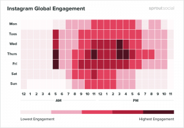

If you’re wondering how to build an Instagram following for your new profile, you’ve come to the right place. Instagram has more than one billion users today, as well as incredible engagement levels too. It’s no wonder that businesses of all shapes and sizes are figuring out how to get their #Selfie game on point.
If you haven’t started your own Instagram campaign yet, now could be the perfect time to get started. Whether you’re growing the presence of a personal account so that you can earn your stripes as an influencer, or you’re designing a profile as part of a business marketing campaign, there are plenty of ways to gain Instagram followers.
Here’s your ultimate guide to an exceptional following in no time.
Step 1: Design an Incredible Instagram Account Profile
If you want to succeed on Instagram, then you’re going to need a stunning profile.
Your Instagram bio is the first introduction that followers get to you, your brand, and your sense of style. However, designing the perfect profile isn’t easy.
First of all, you’ll need to choose a business profile over a personal account. This will give you access to crucial things like Instagram analytics and paid ads. You’ll also get contact buttons that make it easier for customers to reach you.
Next, you’ll need to fill your profile with:
- A compelling bio that lets people know what to expect if they follow you. Use emojis and #hashtags to get your point across.
- A stunning profile picture that showcases the unique nature of your brand.
- An exciting Instagram business name that’s easy to remember and search for.
- A fantastic username that looks good next to an @Mention tag
- A link in your bio that directs people back to the page or site you want to promote.
Step 2: Post Consistently (Every Day)
The most important feature of any successful Instagram account is plenty of high-value content.
To collect as many Instagram followers as possible, you’ll need to let your fans know that you’re going to be providing them with plenty of great pictures and videos to keep them informed and entertained. Although there’s no one-size-fits-all strategy for how frequently you need to post, many studies suggest that a frequent schedule is the best way to go.
According to visual marketing company Tailwind, companies that posted on Instagram at least 7 times per week had the highest number of followers and likes. Decide what time each day you’re going to publish by looking at your Instagram analytics. These will show you when your Instagram followers are already online and engaging with your content. Sprout Social believes that one of the best times to post is at Wednesday at 3 pm

https://sproutsocial.com/insights/best-times-to-post-on-social-media/#instagram
However, your schedule will depend on the unique demographics you want to target. Once you find your “sweet spot” use a calendar or posting tool to deliver content at the same time each day. This will boost your chances of regular engagement and help you to reach the Instagram explore page.
Step 3: Make the Most of Different Content Types
When it comes to finding out how to build an Instagram following, remember that there’s more to Instagram than just posting #Selfies and pictures of your food. You can also connect with your followers in a multitude of different ways. For instance:
- Instagram video and IGTV gives you a chance to show off your creativity with highly-engaging video content. Cover things like behind-the-scenes tours, interviews, How-to content, and Q&A sessions to delight your audience.
- Live video: Show your audience your authentic side with live content that showcases exclusive limited-time sale codes, and upcoming products.
- Instagram Stories: Interact with your audience through stories that only last for 24-hours at a time. Studies show that Stories are excellent for increasing everything from ad recall to purchase intent.
Instagram introduces new features to their platform all of the time, from boomerang videos to stickers and countdown clocks. Keeping on top of the latest trending features is a great way to show your audience that you’re on the cutting-edge and stop them from getting bored with your content.
Step 4: Build a Reliable Hashtag Strategy
One of the most important things you can use to get Instagram followers today is the right hashtags. Instagram Stories and other content appear in the “Explore” page, which is where your audience will go to find new content from people that they’re not following yet. If you want to attract new customers to your brand, then you’re going to need to help them find you.
#Hashtags are what Instagram uses to organize its content. If you add a hashtag to your post, you’re telling both the Instagram algorithm and your followers what kind of content they can expect from your post. To boost your chances of engagement, remember to use a wide variety of different tags, including:
- Trending hashtags: Popular tags like #TBT and #Instagood keep you in the popular Explore lists and show your audience that you speak their language.
- Niche hashtags: These are more specific hashtags like #PugLife, which appeal to a very particular number of followers from your target market.
- Geolocation hashtags: These show your followers where you’re posting from, and can help people to find you when they’re searching for content from a specific location
Don’t forget that you can always create your own branded hashtags too. Unique tags like Nike’s #JustDoIt encourage the creation of user-generated content and help customers to spread awareness about your Insta profile.
Now that Instagram is cracking down more heavily on hashtag strategies that seem spammy or irrelevant, you’ll need to think more carefully about the options you use in each post. Don’t just use the same list every time, and make sure each tag is relevant to the content you produce.
Step 5: Invest in User Generated Content
When it comes to learning how to build an Instagram following, user-generated content can be like gold dust. After all, every time someone shares a piece of content linking back to your company on Instagram, they’re increasing the credibility of your business, and driving new customers to your doorstep. Getting user-generated content is easier said than done, of course.
One of the best ways to convince your audience to create content on your behalf is to run a competition. Tell your customers to share a picture of themselves using your product or service, along with a unique branded hashtag for the chance to win a prize. You might not get a lot of entrants, to begin with when you first start using Instagram, but the bigger the rewards are for your audience, the more likely they are to get involved.
Check out this sensational piece of user-generated content from Hilton Hotels, for instance:
Check out this sensational piece of user-generated content from Hilton Hotels, for instance:
Once a handful of people start getting involved with your UGC strategies, you’ll find that more followers start to feel more comfortable sharing their own content with you. Eventually, you could even end up with some handy brand advocates to share the good word about your company.
Step 6: Get a Boost from Influencers
Another great way to gain Instagram followers using content shared by someone else is to work with IG influencers. Influencers are the people in your network that already have a connection with your target audience. They may have thousands of followers within the niche that you’re trying to penetrate, which makes them an excellent partner for your marketing campaign.
Today, you don’t necessarily need to spend a fortune on celebrity influencers to get the most out of this marketing strategy. Instead, all you need is to find people who have a real relationship with the people you want to attract. Remember, you’re looking for influencers of any size who have an engaged following – that means likes and comment numbers should be high.
The average Return on Investment for an influencer marketing campaign these days is $6.50 for every dollar spent. That means that if you use this strategy correctly, you could make a small fortune through carefully-chosen connections. Check out this example from @FijiWater and @evanfitness_nyc here:
Notice how neither person involved in the campaign is trying to obviously sell you anything, yet there’s still enough focus on the product to tempt customers into buying.
Step 7: Invest in Instagram Ads
Sometimes you’ve got to pay to play if you want to win. The great thing about Instagram is that it’s entirely possible to learn how to build an Instagram following without paying a penny. However, when you’re just getting started on the platform, and you don’t have a lot of existing sway with the audience you want to reach, it pays to get a bit of extra help.
Targeted Instagram ad campaigns improve your chances of your best content appearing in front of the right people. Even just a short ad campaign launched through Instagram Stories or designed using video marketing can help you to attract thousands of followers over just a few days.
The good news is that Instagram advertising is built on top of the incredibly successful Facebook targeting system. This means that it’s easy to get in-depth and granular with the customers you want to reach. Once you’ve implemented your campaign, make sure that you track your results carefully. Using Instagram Insights ensures that you can get the best ROI from all future marketing efforts.
Step 8: Cross-Promote your Content
Just because Instagram marketing is one of the best ways to improve your social presence these days, doesn’t mean it’s the only strategy you need to use. If you want to enhance your brand reach quickly and easily, then it’s a good idea to consider cross-promoting your content across multiple platforms. For instance, if you’re already popular on Facebook, let your audience know that they can find you on Instagram too?
Since Facebook already owns Instagram, it’s easy to set up automated posts that share your content on Facebook at the same time you post on Insta. This can save you a lot of time and effort on promotion. Additionally, don’t forget that you can include Instagram buttons and links to your profile on virtually every other asset you have online.
An Instagram button on your website, or one at the bottom of your email newsletters can be all it takes to drive extra customers back to your profile. You can even include your Instagram handle on your bio when posting guest blogs.
Step 9: Engage with your Audience
Saving the best tip til’ last – this is the one thing you need to focus on when it comes to developing your Instagram profile. Engaging with your Instagram followers is the most important thing you can do online today to build an Instagram following. It’s how you make sure that your existing fans will direct new customers your way. What’s more, it’s also how you keep your Instagram community as loyal as possible.
There are plenty of ways to start engaging with your Instagram followers, including:
- Finding their trending posts online and commenting, liking or re-gramming them (with permission). Remember that you shouldn’t be just leaving basic comments here. Offer some value with whatever you say.
- Responding to comments and direct messages sent by your customers. Show your followers that you’re interested in what they have to say and keen to give them the information they need.
- Running Q&A sessions: Hosting live video Q&A sessions is a fantastic way to get useful feedback from your followers. Remember to advertise your Live video before you broadcast, so people know when to tune in.
Learning How to Build an Instagram Following
Creating a community of loyal and engaged Instagram followers isn’t something that you can do overnight.
However, if you use the nine steps outlined above, you should be on the right track. The more you commit to engaging with your Instagram followers, the better your Instagram strategy will become.
Don’t forget to keep an eye on your Instagram analytics too. These statistics will show you which of your posts have the most value to offer when it comes to bringing new followers your way.
Want more tips on enhancing your follower count? Stay tuned to SocialFollow
You May Also Like:


2 Comments